-
11/2016
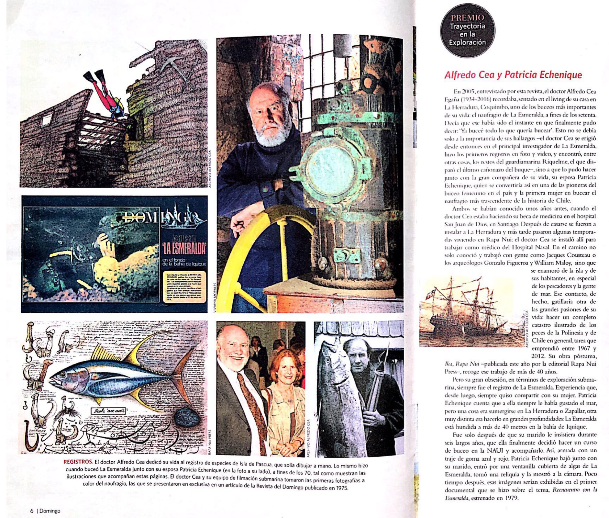
Datos:
Premio Trayectoria en la Exploración
-
07/2016
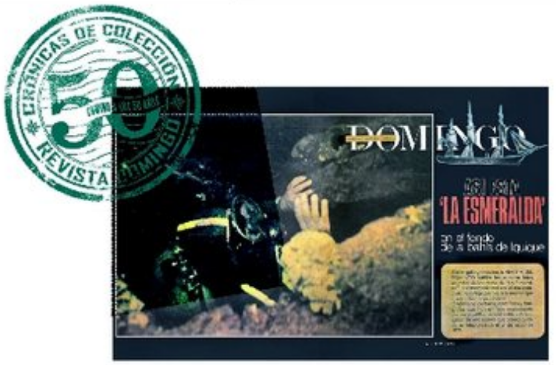
Datos:
Re-impresión artículo del 6 de Julio 1975 en la Revista del Domingo de El Mercurio
-
04/2016
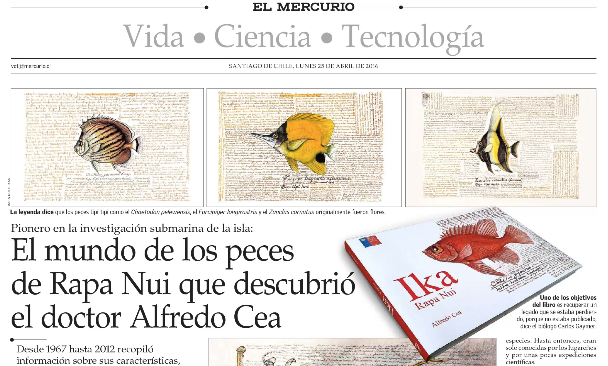
Datos:
El mundo de los peces de Rapa Nui
Reportaje El mundo de los peces de Rapa Nui que descubrió el doctor Alfredo Cea
- El Mercurio
- Mar
- Rapa Nui
-
07/2015

Datos:
Revista Más región
ALFREDO CEA EGAÑA: LA AVENTURA ETERNA CON EL MUNDO MARINO -
2013
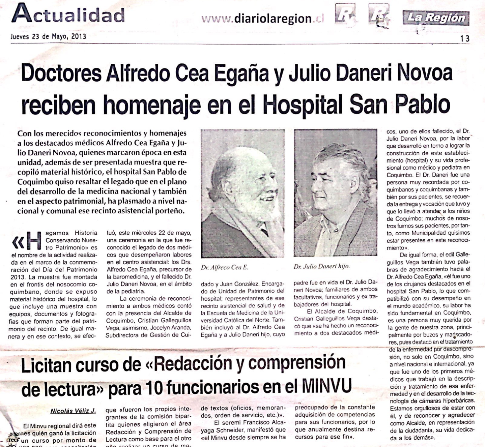
Datos:
Homenaje del Hospital San Pablo de Coquimbo
-
2013
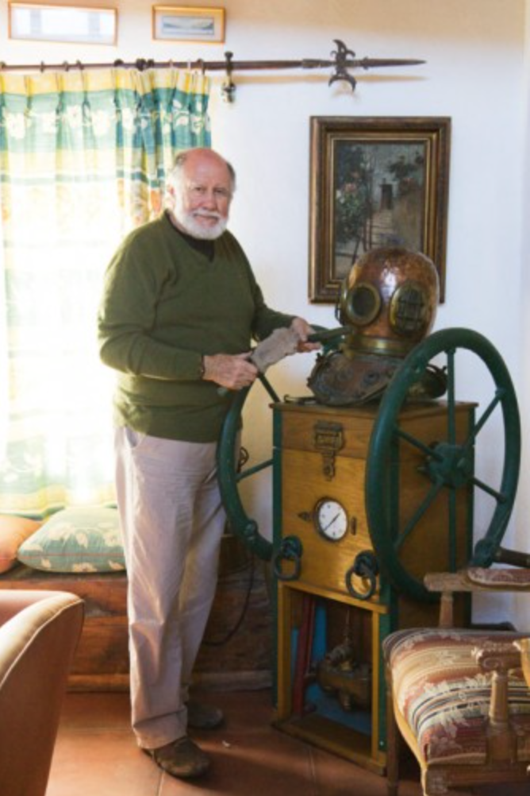
Datos:
Entrevista Casa Buque
-
2011
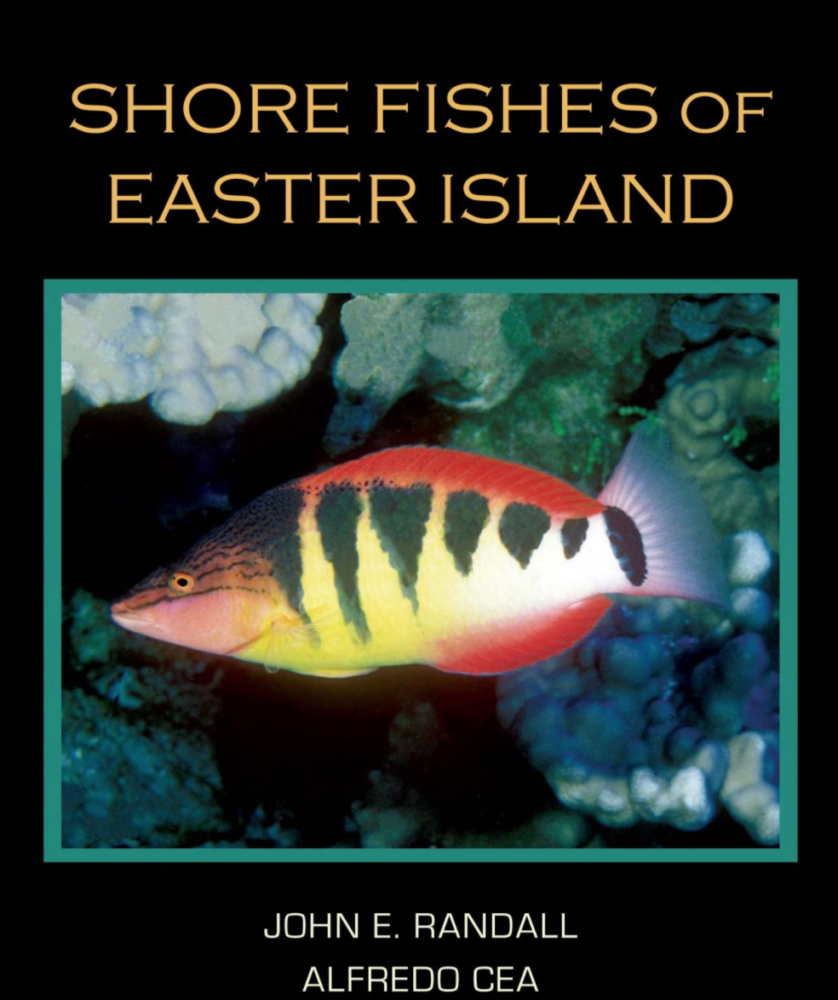
Datos:
Shore fishes of the Eastern Island
-
2010
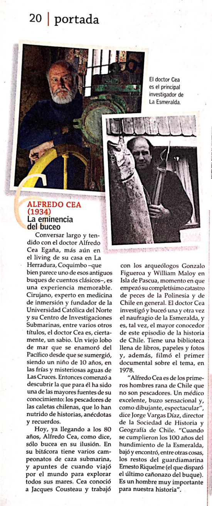
Datos:
Explorador Bicentenario, Revista El Domingo, El Mercurio
-
11/2007
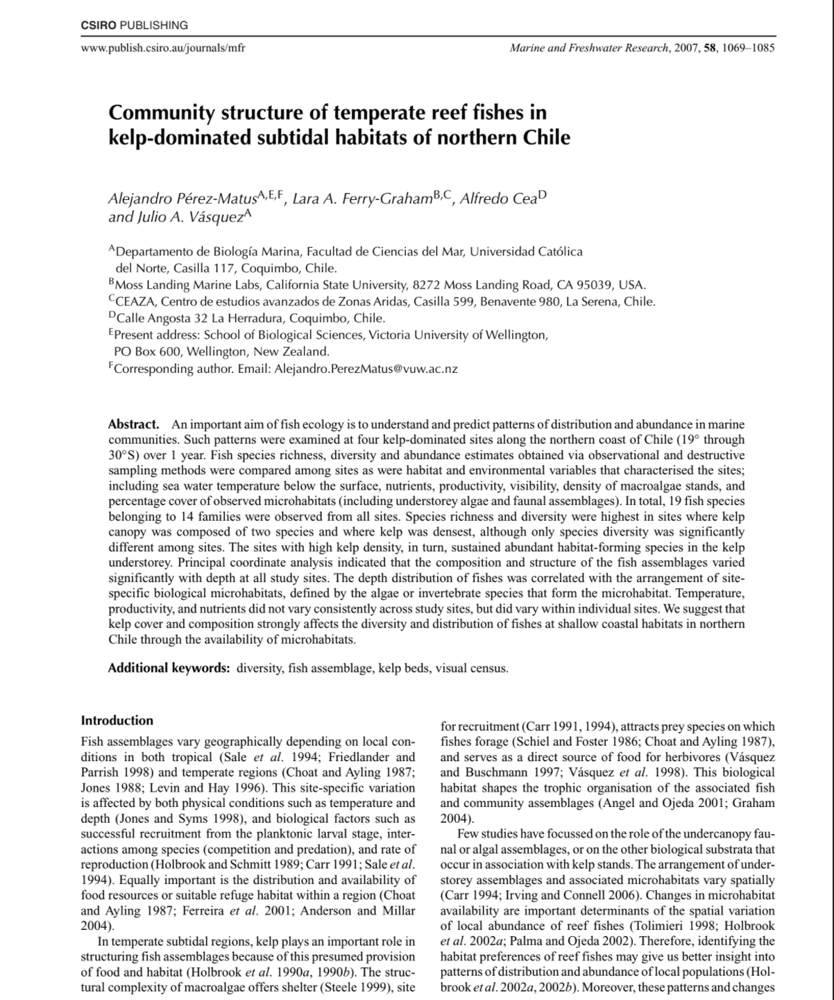
Datos:
Marine and Freshwater Research
Community structure of temperate reef fishes in kelp-dominated subtidal habitats of northern Chile. -
5/2007
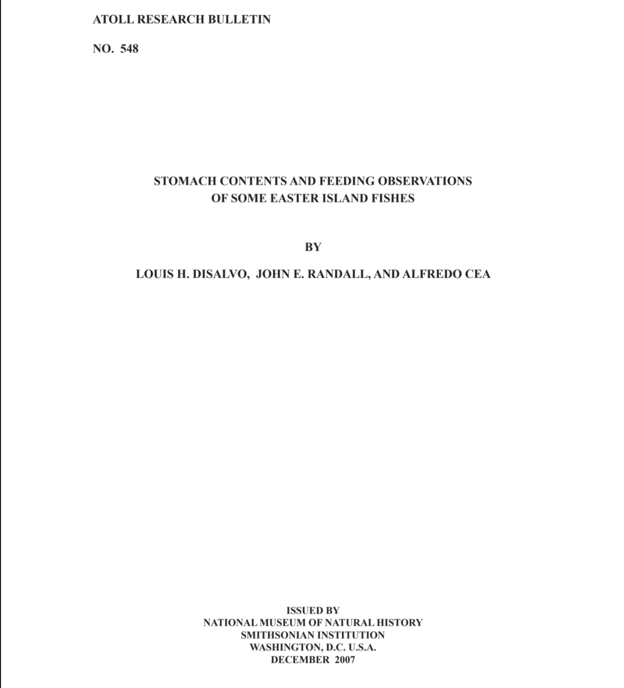
Datos:
Atoll Research Bulletin
STOMACH CONTENTS AND FEEDING OBSERVATIONS OF SOME EASTER ISLAND FISHES -
2005
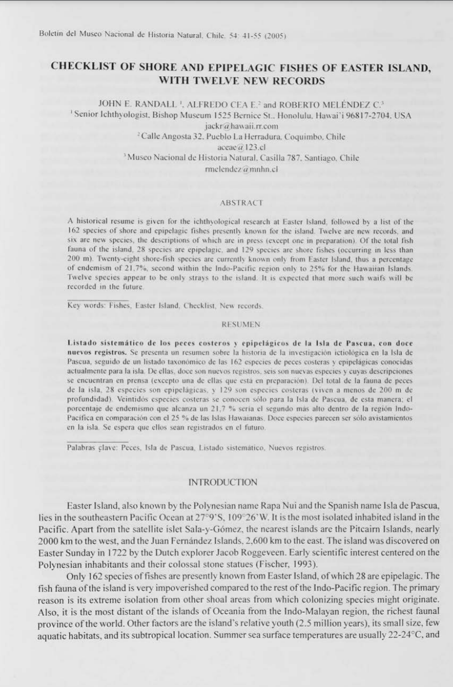
Datos:
Bo. Mus. Nac. Hist. Nat
Checklist of shore and epipelagic fishes of Easter Island, with twelve new records -
2005
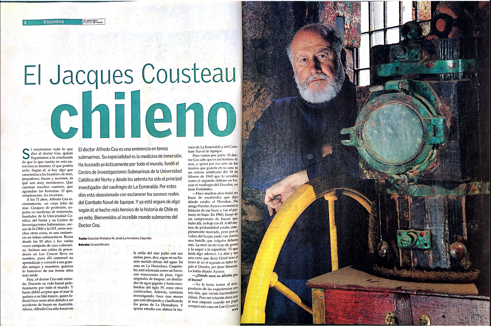
Datos:
Reportaje Revista El Domingo
-
1997
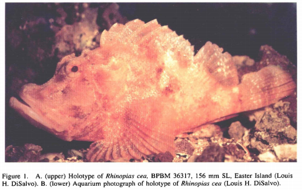
Datos:
Especie de pez escorpión Rhinopias Cea en honor a Alfredo Wikipedia
-
1989
Randall, J.E., A. Cea Egaña. Canthigaster cyanetron a new toby (teleostei: Tetraodontidae) from Easter Island. Rev. Fr. Aquariol. 15(3): 93-96.
-
1988
Randall, J.E., A. DiSalvo, L.H., J.E. Randall & A. Cea. Ecological reconnaissance of the Easter Island sublittoral marine environment. natl. Geogr. Res. 4(4):451-473.
-
1986
Nace su hijo Sebastián
-
1984
Randall, J.E., A. Cea Egaña. Native names of Easter Island fishes, with comments on the origin of Rapanui people. Occ. Pap. Bernice P. Bishop Mus. 25(12):1-16.
-
1984
Cea Egaña, Alfredo and John E. McCosker: Attacks on divers by white sharks in Chile, California Fish and Game 70(3).
-
1982
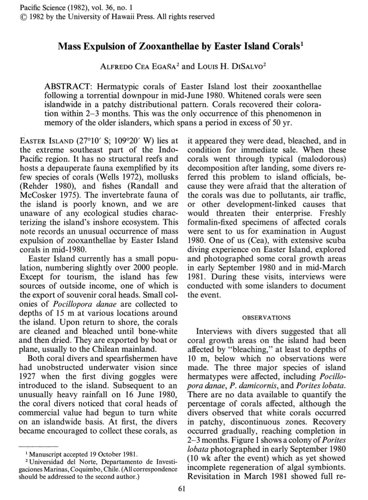
Datos:
Pacific Science 1982
Mass expulsion of zooxanthellae by Easter Island Corals -
1978
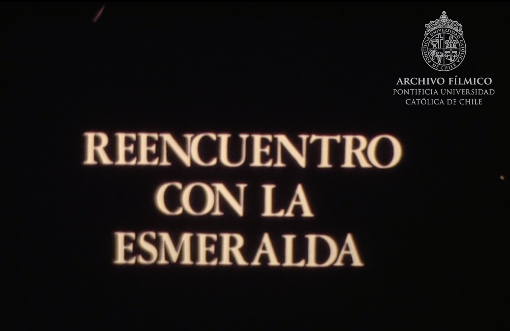
Datos:
Archivo Fílmico UC
Reencuentro con la Esmeralda -
1970
Nace su hija Antonia
-
1967
Nace su hijo Alfredo
-
1967
Funda el Centro de Investigaciones Submarinas de la Universidad Católica del Norte
-
1967
Se compra y construye la propiedad de calle angosta.
-
1965
Nace su hija Francisca
-
1964
Nace su hija Carolina
-
1963
Primeros días de Junio, recién casados luego de la luna de miel de más de 1 mes en Brasil, primer domicilio en calle el cerrito (a la entrada de la herradura)
-
1963
20 de Abril, se casa con Patricia Echenique, Iglesia de los padres Franceses de Alameda (SSCC Alameda), la fiesta fue en la casa de la novia en Vergara 409
-
1960
Se recibe de médico
-
1953
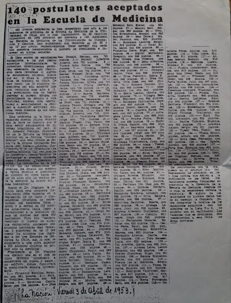
Datos:
Entra junto con sus amigos Rodolfo Armas, Patricia Mac Donald y Domingo Vicuña entre otros
Ingresa a estudiar medicina
- Medicina
- U. Chile
- La Nación
-
1944

Datos:
Probablemente en las cruces.
Veranos en la playa
- Las Cruces
-
1934
Nace en Santiago de Chile el 9 de Septiembre de 1934